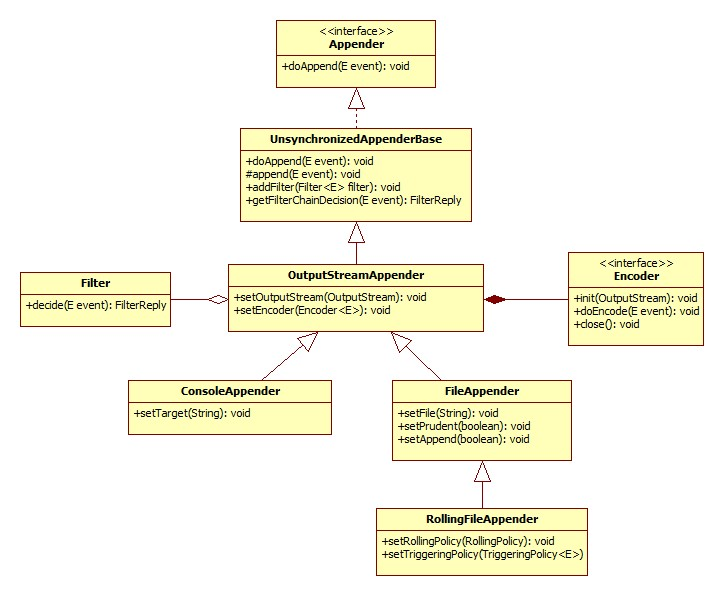

什么是 Appender
logback 将写入日志事件的任务委托给一个名为 appender 的组件。Appender 必须实现 ch.qos.logback.core.Appender 接口。该接口的方法如下：
1 | package ch.qos.logback.core; |
doAppender() 方法接收一个泛型参数 E 作为唯一的参数。E 的实际参数类型取决于 logback 模块。在 logback-classic 模块里面，E 的类型是 ILoggingEvent 。在 logback-access 模块里面，E 的类型是 AccessEvent。doAppend() 是 logback 框架里面最重要的模块。它的责任是将日志事件进行格式化，然后输出到对应的设备上。
Appender 都是实体类，这样可以确保它们通过名字被引用。Appender 接口继承了 FilterAttachable 接口。使得一个或多个过滤器可以附加到 appender 实例上。
Appender 最基本的责任是将日志事件进行输出。然而，它们可以委托 Layout 或者 Encoder 对象来对日志事件进行格式化。每一个 layout/encoder 有且只与一个 appender 相关联。例如，SocketAppender 仅仅序列化日志事件，然后再通过线路传输。
AppenderBase
ch.qos.logback.core.AppenderBase 是一个抽象类，实现了 Appender 接口。它提供了基本方法供所有 appender 使用。例如：获取或设置名称的方法、激活状态、布局以及过滤器。它是 logback 中所有 appender 的父类。尽管是一个抽象类，但是 AppenderBase 还实现了 Append 接口中 doAppend() 方法。可能附上源码的摘要来讨论 AppenderBase 是最清楚的方式。
1 | public synchronized void doAppend(E eventObject) { |
doAppend() 的实现是 synchronized 的。不同的线程通过同一个 appender 打印日志是线程安全的。当一个线程 T 正在执行 doAppend() 方法，接下来其它的线程调用将会被阻塞直到线程 T 离开 doAppend() 方法，这样可以确保 T 对 appender 的访问具有独占性。
因为这种同步并不总是适合的，所以 logback 提供了 ch.qos.logback.core.UnsynchronizedAppenderBase 类，跟 AppenderBase 类十分的相似。为了简单起见，接下来的内容我们只讨论 UnsynchronizedAppenderBase。
首先，doAppend() 方法会去检查 guard 是不是为 true。如果是，它会立即退出。如果 guard 不是为 true，下一步将它设置为 true。guard 会确保 doAppend() 方法不会被自身递归调用。想象一下这样的一个组件，被在 append() 方法之外的地方被调用，用于打印日志。它的调用可能被直接指向一个完全相同的刚刚调用过它的一个 appender，导致无限循环和堆栈溢出。
注：
UnsynchronizedAppenderBase类中有一个guard变量
private ThreadLocal<Boolean> guard = new ThreadLocal<Boolean>();
接下来，我们会检查 started 是否为 true。如果不是，doAppend() 会发出一个警告并返回。换句话说，一旦 appender 被关闭，就不能对它进行写入。Appender 对象实现了 LifeCycle 接口，也就是说它实现了 start()、stop()、isStarted 方法。在设置完一个 appender 的所有属性之后，logback 的配置框架 - Joran，将会给 appender 发一个信号去激活它的属性。根据它的类型，一个 appender 可能会启动失败，如果某些特定的属性丢失或者由于各种属性之间的冲突。例如，创建文件依赖截断模式，FileAppender 不能对 File 选项的值起作用，直到这个值确定下来。明确的激活步骤可以确保一个 appender 在知道它们的值之后再作用于其属性。
如果 appender 不能被被启动或者被停止，logback 内部状态管理系统将会发出一条警告信息。在几次尝试之后，为了避免被同一条警告信息淹没内部状态系统，doAppend() 会停止发出这些警告。
接下来 if 语句检查过滤器的结果，根据过滤器链的结果，事件可以被拒绝或者被接受。如果缺少过滤器链，事件默认会被接受。
接下来 doAppend() 调用 append() 的实现方法。这个方法是实际的执行者，用来将事件附加到合适的设备上。
最后，guard 被释放，后续对 append() 的调用得以执行。
在手册的其余部分，我们保留 option 与 property，用于 JavaBean 通过 get 和 set 方法动态推断出来的任何属性。
Logback-core
Logback-core 为 logback 其他模块的构建奠定了基础。一般来说，logback-core 的组件需要一些定制，尽管很少。但是，在接下来的几个部分，我们描述了一种可以开箱即用的 appender。
OutputStreamAppender
OutputStreamAppender 将事件附加到 java.io.OutputStream 上。这个类提供了其它 appender 构建的基础服务。用户通常不会直接实例一个 OutputStreamAppender 实例。因为一般来说 java.io.OutputStream 类型不能方便的转为 String。因为在配置文件中没有方法去直接指定一个 OutputStream 目标对象。简单来说，你不能通过配置文件配置一个 OutputStreamAppender。但是这并不意味着 OutputStreamAppender 缺少配置属性。这些属性描述如下：
| 属性名 | 属性值 | 描述 |
|---|---|---|
| ecoder | Encoder | 决定通过哪种方式将事件写入 OutputStreamAppender，Encoder 将会在单独的章节介绍 |
| immediateFlush | boolean | immediateFlush 的默认值为 true。立即刷新输出流可以确保日志事件被立即写入，并且可以保证一旦你的应用没有正确关闭 appender，日志事件也不会丢失。从另一方面来说，设置这个属性为 false，有可能会使日志的吞吐量翻两番（视情况而定）。但是，设置为 false，当应用退出的时候没有正确关闭 appender，会导致日志事件没有被写入磁盘，可能会丢失。 |
OutputStreamAppender 是其他三个 appender 的父类，分别是 ConsoleAppender、FileAppender 以及 RollingFileAppender。FileAppender 又是 RollingFileAppender 的父类。下面的类图展示 OutputStreamAppender 与子类之间的关系：

ConsoleAppender
ConsoleAppender 就跟名字显示的一样，是将日志事件附加到控制台，跟进一步说就是通过 System.out 或者 System.err 来进行输出。默认通过前者。ConsoleAppender 通过用户指定的 encoder，格式化日志事件。Encoder 会在接下来的章节讨论。System.out 与 System.err 两者都是 java.io.PrintStream 类型。因此，它们被包装在可以进行 I/O 缓存操作的 OutputStreamWriter 中。
| 属性名 | 类型 | 描述 |
|---|---|---|
| encoder | Encoder | 见 OutputStreamAppender 属性 |
| target | String | System.out 或 System.err 。默认为 System.out |
| withJansi | boolean | withJansi 的默认值为 false。设置 withJansi 为 true 可以激活 Jansi 在 windows 使用 ANSI 彩色代码。在 windows 上如果设置为 true，你应该将 org.fusesource.jansi:jansi:1.9 这个 jar 包放到 classpath 下。基于 Unix 实现的操作系统，像 Linux、Max OS X 都默认支持 ANSI 才彩色代码。 |
Example: ConsoleAppender configuraion (logback-Console.xml)
1 | <configuration> |
通过以下命令执行上面的配置文件：
1 | java chapters.appenders.ConfigurationTester logback-Console.xml |
FileAppender
FileAppender 是 OutputStreamAppender 的子类，将日志事件输出到文件中。通过 file 来指定目标文件。如果该文件存在，根据 append 的值，要么将日志追加到文件中，要么该文件被截断。
| 属性名 | 类型 | 描述 |
|---|---|---|
| append | boolean | 如果为 true，日志事件会被追加到文件中，否则的话，文件会被截断。默认为 true |
| encoder | Encoder | 参见 OutputStreamAppender 的属性 |
| file | String | 要写入文件的名称。如果文件不存在，则新建。在 windows 平台上，用户经常忘记对反斜杠进行转义。例如，c:\temp\test.log 不会被正确解析，因为 ‘\t’ 是一个转义字符，会被解析为一个 tab 字符 (\u0009)。正确的值应该像：c:/temp/test.log 或者 c:\\temp\\test.log。没有默认值。 |
| prudent | boolean | 在严格模式下，FileAppender 会将日志安全的写入指定文件。即使在不同的 JVM 或者不同的主机上运行 FileAppender 实例。默认的值为 false。严格模式可以与 RollingFileAppender 结合使用。严格模式也意味着 append 属性被自动设置为 true。严格模式依赖排他文件锁。实验证明，文件锁大概是写入日志事件成本的 3 倍。在严格模式关闭的情况下，往一台普通电脑的硬盘上将一个日志事件写入文件，大概需要耗费 10 微秒。但是在开启的情况下，大概需要 30 微秒。也就是说在关闭的情况下可以一秒钟写入 100000 个日志事件，但是在开启的情况下，一秒钟只能写入33000 个日志事件。严格模式可以在所有 JVM 写入同一个文件时，有效的序列化 I/O 操作。因此，随着竞相访问同一个文件的 JVM 数量上升，将会延迟每一个 I/O 操作。只要总共的 I/O 操作大约为每秒 20 个日志请求，对性能的影响可以被忽略。但是，如果应用每秒产生了 100 个以上的 I/O 操作，性能会受到明显的影响，应该避免使用严格模式。网络文件锁 当日志文件位于网络文件系统上时，严谨模式的成本会更高。同样重要的是，网络文件系统的文件锁带有很强的偏向性，当前获得锁的进程在释放锁之后会立马又重新获得。因此，当一个进程独占日志文件，将会导致其它进程饥饿死锁。严格模式的影响严重依赖网速以及操作系统实现的细节。我们提供了一个小型应用 FileLockSimulator 用于在你的环境中模拟严格模式。 |
立即刷新 默认情况下，每一个日志事件都会被立即刷新到底层的输出流。默认方法更加的安全，因为日志事件在你的应用没有正确关闭 appender 的情况下不会丢失。但是，要想显著的增加日志的吞吐率，你可以将 immediateFlush 设置为 false。
下面是 FileAppender 的配置示例：
Example: logback-fileAppender.xml
1 | <configuration> |
在 logback-examples 的文件夹下，运行以下命令：
1 | java chapters.appenders.ConfigurationTester logback-fileAppender.xml |
要指定配置文件的具体路径。也可以直接在 eclipse 里面 Run Application 时设置 Arguments。
文件唯一命名（使用时间戳）
在应用的开发阶段或者短期应用中，例如：批处理程序，在每个应用启动的时候创建一个新的日志文件。通过 <timestamp> 元素可以轻易做到这点。
Example: logback-timestamp.xml
1 | <configuration> |
timestamp 元素需要两个强制的属性 key 跟 datePattern 以及可选的属性 timeReference。key 属性的值是来区分哪个 timestamp 元素，并且在后续的配置中可以通过变量替换来使用。datePattern 属性用于将当前时间格式化成字符串。日期格式必须遵循 SimpleDateFormat 中的规范。timeReference 表示时间戳引用哪个时间。默认为解析配置文件的时间，也就是当前时间。但是，在一些特定的情况下，可以设置为上下文初始化的时间。通过 设置 timeReference 的值为 contextBirth。
通过一下命令来测试 <timestamp> 元素：
1 | java chapters.appenders.ConfigurationTester logback-timestamp.xml |
译者注：需要指定具体配置文件的具体路径，也可以通过 eclipse 来运行。后续不再重复此注意事项。
设置 timeReference 的值为 “contextBirth” 的例子如下：
Example: logback-timestamp-contextBirth.xml
1 | <configuration> |
RollingFileAppender
RollingFileAppender 继承自FileAppender，具有轮转日志文件的功能。例如，RollingFileAppender 将日志输出到 log.txt 文件，在满足了特定的条件之后，将日志输出到另外一个文件。
与 RollingFileAppender 进行交互的有两个重要的子组件。第一个是 RollingPolicy，它负责日志轮转的功能。另一个是 TriggeringPolicy，它负责日志轮转的时机。所以 RollingPolicy 负责发生什么，TriggeringPolicy 负责什么时候发生。
为了让 RollingFileAppender 生效，必须同时设置 RollingPolicy 与 TriggeringPolicy。但是，如果 RollingPolicy 也实现了 TriggeringPolicy 接口，那么只需要设置前一个就好了。
RollingFileAppender 的属性如下所示：
| 属性名 | 类型 | 描述 |
|---|---|---|
| file | String | 参见 FileAppender |
| append | boolean | 参见 FileAppender |
| encoder | Encoder | 参见 OutputStreamAppender |
| rollingPolicy | RollingPolicy | 当轮转发生时，指定 RollingFileAppender 的行为。下面将会详细说明 |
| triggeringPolicy | TriggeringPolicy | 告诉 RollingFileAppender 什么时候发生轮转行为。下面将会详细说明 |
| prudent | boolean | FixedWindowRollingPolicy 不支持该属性。RollingFileAppender 在使用严格模式时要与 TimeBasedRollingPolicy 结合使用，但是有两个限制：1. 在严格模式下，也不支持也不允许文件压缩（我们不能让一个 JVM 在写入文件时，另一个 JVM 在压缩该文件） 2. 不能对 FileAppender 的 file 属性进行设置。实际上，大多数的操作系统不允许在有进程操作文件的情况下对文件改名。其它的参考 FileAppender |
RollingPolicy
RollingPolicy 负责轮转的方式为：移动文件以及对文件改名。
RollingPolicy 接口如下：
1 | package ch.qos.logback.core.rolling; |
rollover() 方法负责对日志文件进行归档。getActiveFileName() 方法负责获取当前日志文件的名字。getCompressionMode() 方法决定采取哪种压缩模式。通过 setParent(FileAppender appender) 方法引用父类。
TimeBasedRollingPolicy
TimeBasedRollingPolicy 是最常用的轮转策略。它是基于时间来定义轮转策略。例如按天或者按月。TimeBasedRollingPolicy 既负责轮转的行为，也负责触发轮转。实际上，TimeBasedRollingPolicy 同时实现了 RollingPolicy 与 TriggeringPolicy 接口。
TimeBasedRollingPolicy 的配置需要一个强制的属性 fileNamePattern 以及其它的可选属性。
| 属性名 | 类型 | 描述 |
|---|---|---|
| fileNamePattern | String | 该属性定义了轮转时的属性名。它的值应该由文件名加上一个 %d 的占位符。%d 应该包含 java.text.SimpleDateFormat 中规定的日期格式。如果省略掉这个日期格式，那么就默认为 yyyy-MM-dd 。轮转周期是通过 fileNamePattern 推断出来的。 注意：可以选择对 RollingFileAppender（TimeBasedRollingPolicy 的父类）中的 file 属性进行设置，也可以忽略。通过设置 FileAppender 的 file 属性，你可以将当前活动日志的路径与归档日志的路径分隔开来。当前日志永远会是通过 file 指定的文件。它的名字不会随着时间的推移而发生变化。但是，如果你选择忽略 file 属性，当前活动日志在每个周期内将会根据 fileNamePattern 的值变化。稍后的例子将会说明这一点。%d{} 中的日期格式将会遵循 java.text.SimpleDateFormat 中的约定。斜杆 ‘/’ 或者反斜杠 ‘\’ 都会被解析成目录分隔符。指定多个 %d 可以指定多个 %d，但是只能有一个是主要的，用于推断轮转周期。其它的 %d 占位符必须通过 ‘aux’ 标记为辅助的。见下面的示例：多个 %d 占位符允许你在文件夹中去管理归档文件，这个跟轮转周期不同。如下所示：通过年月来管理日志文件夹，但是轮转周期是在每天晚上零点。/var/log/%d{yyyy/MM, aux}/myapplication.%d{yyyy-MM-dd}.log TimeZone 在某些情况下，你可能想要根据时区而不是主机的时钟来轮转日志。你可以通过如下方式来指定一个时区，例如：aFloder/test.%d{yyyy-MM-dd-HH, UTC}.log 如果指定的 timezone 不能被识别或者拼写错误，将会根据 TimeZone.getTimeZone(String) 方法指定为 GMT。 |
| maxHistory | int | 这个可选的属性用来控制最多保留多少数量的归档文件，将会异步删除旧的文件。比如，你指定按月轮转，指定 maxHistory = 6，那么 6 个月内的归档文件将会保留在文件夹内，大于 6 个月的将会被删除。注意：当旧的归档文件被移除时，当初用来保存这些日志归档文件的文件夹也会在适当的时候被移除。 |
| totalSizeCap | int | 这个可选属性用来控制所有归档文件总的大小。当达到这个大小后，旧的归档文件将会被异步的删除。使用这个属性时还需要设置 maxHistory 属性。而且，maxHistory 将会被作为第一条件，该属性作为第二条件。 |
| cleanHistoryOnStart | boolean | 如果设置为 true，那么在 appender 启动的时候，归档文件将会被删除。默认的值为 false。归档文件的删除通常在轮转期间执行。但是，有些应用的存活时间可能等不到轮转触发。对于这种短期应用，可以通过设置该属性为 true，在 appender 启动的时候执行删除操作。 |
下面是关于 fileNamePattern 的介绍。
| fileNamePattern | 轮转周期 | 示例 |
|---|---|---|
| /wombat/foo.%d | 每天轮转（晚上零点）。由于省略了指定 %d 的日期格式，所以默认为 yyyy-MM-dd | 没有设置 file 属性：在 2006.11.23 这一天的日志都会输出到 /wombat/foo.2006-11-23 这个文件。晚上零点以后，日志将会输出到 wombat/foo.2016-11-24 这个文件。设置 file 的值为 /wombat/foo.txt ：在 2016.11.23 这一天的日志将会输出到 /wombat/foo.txt 这个文件。在晚上零点的时候，foo.txt 将会被改名为 /wombat/foo.2016-11-23 。然后将创建一个新的 foo.txt ，11.24 号这一天的日志将会输出到这个新的文件中。 |
| /wombat/%d{yyyy/MM}/foo.txt | 每个月开始的时候轮转 | 没有设置 file 属性：在 2016.10 这一个月中的日志将会输出到 /wombat/2006/10/foo.txt 。在 10.31 晚上凌晨以后，11 月份的日志将会被输出到 /wombat/2006/11/foo.txt 。设置 file 的值为 /wombat/foo.txt ：在 2016.10，这个月份的日志都会输出到 /wombat/foo.txt 。在 10.31 晚上零点的时候，/wombat/foo.txt 将会被重命名为 /wombat/2006/10/foo.txt ，并会创建一个新的文件 /wombat/foo.txt ，11 月份的日志将会输出到这个文件。依此类推。 |
| /wombat/foo.%d{yyyy-ww}.log | 每周的第一天（取决于时区） | 每次轮转发生在每周的第一天，其它的跟上一个例子类似 |
| /wombat/foo%d{yyyy-MM-dd_HH}.log | 每小时轮转 | 跟之前的例子类似 |
| /wombat/foo%d{yyyy-MM-dd_HH-mm}.log | 每分钟轮转 | 跟之前的例子类似 |
| /wombat/foo%d{yyyy-MM-dd_HH-mm, UTC}.log | 每分钟轮转 | 跟之前的例子类似，不过时间格式是 UTC |
| /foo/%d{yyyy-MM, aux}/%d.log | 每天轮转。归档文件在包含年月的文件夹下 | 第一个 %d 被辅助标记。第二个 %d 为主要标记，但是日期格式省略了。因此，轮转周期为每天（由第二个 %d 控制），文件夹的名字依赖年与月。例如，在 2016.11 的时候，所有的归档文件都会在 /foo/2006-11/ 文件夹下，如：/foo/2006-11/2006-11-14.log |
任何斜杆或者反斜杠够会被当作文件夹分隔符。任何必要的文件夹都会在有需要的时候创建。你可以轻松的将日志文件放在单独的文件夹中。
TimeBasedRollingPolicy 支持文件自动压缩。如果 fileNamePattern 以 .gz 或者 .zip 结尾，将会启动这个特性。
| fileNamePattern | 轮转周期 | 示例 |
|---|---|---|
| /wombat/foo.%d.gz | 每天轮转（晚上零点），自动将归档文件压缩成 GZIP 格式 | file 属性没有设置：在 2009.11.23，日志将会被输出到 /wombat/foo.2009-11-23 这个文件。但是，在晚上零点的时候，文件将会被压缩成 /wombat/foo.2009-11-23.gz 。在 11.24，这一天的日志将会被直接输出到 /wombat/folder/foo.2009-11-24 这个文件。file 属性的值设置为 /wombat/foo.txt ：在 2009.11.23，日志将会被输出到 /wombat/foo.txt 这个文件。在晚上零点的时候，该文件会被压缩成 /wombat/foo.2009-11-23.gz 。并会创建一个新的 /wombat/foo.txt 文件，11.24 这一天的日志将会被输出到该文件。依此类推。 |
fileNamePattern 有两个目的。logback 通过该属性可以进行周期性的轮转并且得到每个归档文件的名字。注意，两种跟不同的 pattern 可能会有相同的轮转周期。yyyy-MM 与 yyyy@MM 同样都是按月轮转，但是归档文件最终的名字不一样。
通过设置 file 属性，你可以将活动日志文件的路径与归档文件的路径分隔开来。日志将会一直输出到通过 file 属性指定的文件中，并且不会随着时间而改变。但是，如果你选择忽略 file 属性，活动日志的名字将会根据 fileNamePattern 的值在每个周期内变化。不设置 file 属性的时候，如果在轮转期间存在外部文件句柄并引用日志文件，将会避免 命名错误。
maxHistory 控制归档文件保留的最大数目，并删除旧的文件。例如，如果你指定按月轮转，并设定 maxHistory 的值为 6，那么 6 个月之内的归档文件都会被保留，大于 6 个月的文件将会被删除。注意，当旧的文件被移除时，为文件归档而创建的文件夹在适当的时候也会被移除。
由于各种技术原因，轮转并不是时间驱动的，而是依赖日志事件。例如，在 2002.03.08，假设 fileNamePattern 的值为 yyyy-MM-dd（按天轮转），在晚上零点之后，没有日志事件到来，假设在 23 分 47 秒之后，第一个到达的日志事件将会触发轮转。也就是说轮转实际发生在 03.09 00:23’47 AM 而不是 0:00 AM。因此，依赖日志事件的到达速度，所以轮转可能会有延迟。但是，不管延迟的情况是什么样，一定周期内生成的日志事件将会被输出到指定的文件中，从这个角度来看，轮转算法始终都会是正确的。
下面是 RollingFileAppender 与 TimeBaseRollingPolicy 结合使用的例子：
Example: logback-RollingTimeBased.xml
1 | <configuration> |
下面是在 prudent 模式下（严格模式）RollingFileAppender 与 TimeBasedRollingPolicy 的结合使用的例子：
Example: logback-PrudentTimeBasedRolling.xml
1 | <configuration> |
SizeAndTimeBasedRollingPolicy
有时你希望按时轮转，但同时又想限制每个日志文件的大小。特别是如果后期处理工具需要对日志进行大小限制。为了满足这个需求，logback 配备了 SizeAndTimeBasedRollingPolicy。
注意，TimeBasedRollingPolicy 可以限制归档文件总的大小。所以如果你想要这个限制，你可以通过设置 totalSizeCap 来达到这个目的。
下面的示例展示了基于时间及大小的配置：
Example: logback-sizeAndTime.xml
1 | <configuration debug="true"> |
注意，除了 %d 之外还有 %i。这两个占位符都是强制要求的。在当前时间还没有到达周期轮转之前，日志文件达到了 maxFileSize 指定的大小，会进行归档，递增索引从 0 开始。
基于大小与时间的文件归档支持删除旧的归档文件。你需要指定 maxHistory 属性的值来保存几个周期的日志。当你的应用停止或者启动的时候，日志将会继续向正确的位置输出。即当前周期内索引最大的。
在 1.17 版本前，这个文档会提及一个叫 SizeAndTimeBasedFNATP 的组件。但是 SizeAndTimeBasedFNATP 组件只提供一个最简单的配置。我们不再提供关于 SizeAndTimeBasedFNATP 的文档。尽管这样，早期的配置文件使用 SizeAndTimeBasedFNATP 依然会运行的很好。 实际上，SizeAndTimeBasedRollingPolicy 是使用 SizeAndTimeBasedFNATP 实现的。
FixedWindowRollingPolicy
在轮转时，FixedWindowRollingPolicy 根据固定窗口算法重命名文件，具体描述如下：filaNamePattern 表示归档文件的名字。这个属性是必须的，而且必须包含一个表示整形的占位符 i%。
FixedWindowRollingPolicy 的可用属性如下：
| 属性名 | 类型 | 描述 |
|---|---|---|
| minIndex | int | 表示窗口索引的下界 |
| maxIndex | int | 表示窗口索引的上界 |
| fileNamePattern | String | FixedWindowRollingPolicy 在重命名日志文件时将会根据这个属性来命名。它必须包含一个 i% 的占位符，该占位符指明了窗口索引的值应该插入的位置。例如，当该属性的值为 MyLogFile%i.log ，最小与最大的值分别为 1 和 3。将会产生的归档文件为 MyLogFile1.log ，MyLogFile2.log ，MyLogFile3.log 。 文件压缩的方式也是通过该属性来指定。例如，设置该属性的值为 MyLogFile%i.log.zip ，那么归档文件将会被压缩成 zip 格式。也可以选择压缩成 gz 格式。 |
由于窗口固定算法需要跟窗口大小一样的重命名次数，因此强烈不推荐太大的窗口大小。当用户指定一个较大值时，当前的实现会将窗口大小自动减少为 20。
让我们通过一个例子来了解下固定窗口算法。假设 minIndex 的值为 1，maxIndex 的值为 3。fileNamePattern 的值为 foo%i.log，file 属性的值为 foo.log。
| 轮转数目 | 当前输出文件 | 归档日志文件 | 描述 |
|---|---|---|---|
| 0 | foo.log | - | 还没有到轮转周期，logbak 将日志输出初始文件。 |
| 1 | foo.log | foo1.log | 第一次轮转，foo.log 被重命名为 foo1.log 。一个新的 foo.log 文件将会被创建并成为当前输出文件。 |
| 2 | foo.log | foo1.log，foo2.log | 第二次轮转，foo1.log 被重命名为 foo2.log 。foo.log 被重命名为 foo1.log 。一个新的 foo.log 被创建并成为当前输出文件。 |
| 3 | foo.log | foo1.log，foo2.log，foo3.log | 第三次轮转，foo2.log 被重命名为 foo3.log 。foo1.log 被命名为 foo2.log 。foo.log 被重命名为 foo1.log 。一个新的 foo.log 被创建并成为当前输出文件。 |
| 4 | foo.log | foo1.log，foo2.log，foo3.log | 在这次以及后续的轮转中，将会删除 foo3.log 文件，其它文件的重命名操作跟之前的步骤一样。在本次以及以后的轮转中，将会一直只有三个归档文件以及一个活跃的日志文件。 |
下面的给出了 RollingFileAppender 配合 FixedWindowRollingPolicy 使用的例子。注意，file 属性是强制的，即使它包含了一些跟 fileNamePattern 属性相同的信息。
Example：logback-RollingFixedWindow.xml
1 | <configuration> |
TriggeringPolicy
TriggeringPolicy 的实现用于通知 RollingFileAppender 何时轮转。
TriggeringPolicy 接口仅仅只包含了一个方法。
1 | package ch.qos.logback.core.rolling; |
isTriggeringEvent() 方法接收当前活动的文件以及当前的日志事件作为参数。基于这些参数，通过具体的实现来决定轮转是不是应该发生。TimeBasedRollingPolicy 是使用最广泛的触发策略，也可以用作轮转策略来使用。
SizeBasedTriggeringPolicy
SizeBasedTriggeringPolicy 观察当前活动文件的大小，如果已经大于了指定的值，它会给 RollingFileAppender 发一个信号触发对当前活动文件的轮转。
SizeBasedTriggeringPolicy 只接收 maxFileSize 这一个参数，它的默认值是 10 MB。
maxFileSize 可以为字节，千字节，兆字节，千兆字节，通过在数值后面指定一个后缀 KB，MB 或者 GB。例如，5000000，5000KB，5MB 以及 2GB 都是有效的，前三个是一样的。
1 | <configuration> |
Logback Classic
虽然日志事件在 logback-core 是通用的，但是在 logback-classic 中，它们永远是 ILoggingEvent 的实例。logback-classic 只不过是用来处理 ILoggingEvent 实例的专门处理管道。
SocketAppender and SSLSocketAppender
到目前为止，所介绍的 appender 只能将日志输出到本地资源。相反的是，SocketAppender 被设计成可以将 ILoggingEvent 实例序列化再传输到远端机器。当使用 SocketAppender 时，日志事件将以明文发送，使用 SSLSocketAppender 时，日志事件将通过安全的通道传输。
序列化事件的实际类型为 LoggingEventVO，它实现了 ILoggingEvent 接口。就日志事件而言，远程日志是非侵入式的。在接收到日志事件并反序列化之后，日记事件就像在本地生成的一样。多个 SocketAppender 实例运行在不同的机器上，直接将它们的日志通过固定的格式输出到中央日志服务器上。SocketAppender 不会关联 layout，因为它是序列化日志事件到远程服务器上。SocketAppender 在 Transmission Control Protocol (TCP) 层上运行，该层提供了可靠，有序，流式控制以及端对端的八位字节流。所以，如果远程服务器是可以到达的，那么日志事件最终都会到达那里。相反，如果远程服务器挂掉或者不可达到，那么日志事件会被丢弃。如果服务器重新恢复，那么日志事件的传输将会继续进行。这种重连是通过一个连接线程池周期性的尝试连接来进行的。
日志事件由本地 TCP 实现自动缓冲。也就是说如果连接到服务器的速度很慢，但是比客户端产生日志事件的速度要快，那么客户端不会受到网速的影响。但是，如果网络连接速度比日志产生速度要慢，那么客户端只能以网络速度进行处理。特别在极端情况下，连接到服务器的网络挂掉了，客户端最终会被阻塞。如果网络连接恢复了，但是服务器挂掉了，客户端不会阻塞，尽管因为服务器挂掉了，日志事件丢失。
尽管 SocketAppender 不再依赖任何的 logger，在当前线程的连接下也不会被垃圾收集。但是连接线程只有在服务器挂掉的情况下才存在，为了避免出现垃圾收集问题，你需要明确的关闭 SocketAppender。生命周期长的应用会创建、销毁许多 SocketAppender 实例，应该注意到这个垃圾回收问题。大部分的应用可以忽略这个问题。如果 JVM 在 SocketAppender 关闭之前退出，无论是显式的退出或者是通过后续的垃圾回收，都可能会导致未传输的数据在管道中被丢失。这是基于 windows 系统常见的问题。为了避免数据丢失，通常的做法是调用 close() 方法去关闭 SocketAppender，或者在应用退出之前调用 LoggerContext 的 stop() 方法。
远程服务器通过 remoteHost 与 port 属性来标识。SocketAppender 属性罗列在下表当中。SSLSocketAppender 支持额外的一些属性，将在 Chapter 15: Using SSL 进行讨论。
| 属性名 | 类型 | 描述 |
|---|---|---|
| includeCallerData | boolean | 如果为 true，那么调用者的信息也会被发送到服务端。默认为 false。 |
| port | int | 远程服务器的端口号 |
| reconnectionDelay | Duration | 接受一个表示持续时间的字符串，例如 “10 seconds” 代表每次重连的间隔时间。默认值为 30 秒。将这个值设置为 0，将会关闭重连机制。注意，如果连接服务器成功，则不会出现连接线程池。 |
| queueSize | int | 接受一个整数（大于0）代表有多少个日志事件传输到服务端。当这个值为 1 时，会同步传输日志事件到远端。当这个值大于 1 时，将设队列中还有剩余的空间，那么一个新的事件将会入队。队列的长度大于 1 可以提高性能，消除网络引起的延时。 参见 eventDelayLimist 属性。 |
| eventDelayLimit | Duration | 接受一个表示持续时间的字符串，例如：“10 seconds”。它表示一旦当前队列已满（例如已经包含了 queueSieze 个事件），在丢弃事件之前的等待时间。在远端服务器一直缓慢接收事件时，这种情况就会发生。默认值为 100 毫秒。 |
| remoteHost | String | 服务器的主机名 |
| ssl | SSLConfiguration | 只支持 SSLSocketAppender，这个属性提供了 SSL 配置供 appender 使用，将在 Chapter 15: Using SSL 进行讨论 |
日志服务器的选择
logback classic 给服务器提供了两个选择接收来自 SocketAppender 与 SSLSocketAppender 的日志事件。
ServerSocketReceiver与跟它相对应的具有 SSL 功能的SSLServerSocketReceiver都是接收组件。可以通过配置应用中的 logback.xml 文件来接收远程 socket appender 的日志事件。查看 Chapter 14: Receivers 获取更多的信息。SimpleSocketServer与具有 SSL 功能的SimpleSSLSocketServer都提供了一个简单的 java 应用程序，该应用程序被设计成可配置，并且可以在命令行界面运行。这些应用仅仅等待来自SocketAppender或SSLSocketAppender的日志事件，每个被接收的日志事件按照本地服务器策略进行打印。下面给出一个简单的例子。
使用 SimpleSocketServer
SimpleSocketServer 应用接收两个命令行参数：port 与 configFile。port 监听的端口，configFile 表示 XML 格式的配置文件。
在 logback-examples/ 文件夹下，通过一下命令来启动 SimpleSocketServer：
1 | java ch.qos.logback.classic.net.SimpleSocketServer 6000 \ |
6000 为监听的端口，在 server1.xml 中，ConsoleAppender 与 RollingFileAppender 被添加到 root logger 上。
在启动了 SimpleSocketServer 之后，你可以在多个客户端上使用 SocketAppender 来发送日志事件。这个手册中相关的示例包含了两个这样的客户端：chapters.appenders.SocketClient1 与 chapters.appenders.SocketClient2。两个客户端都会等待用户在控制台输入字符。输入的字符会被包裹在 debug 级别的日志事件中，然后发送到远程服务器。这个两个客户端不同的地方在于 SocketAppender 的配置。SocketClient1 通过编码来配置，SocketClient2 需要获取一个配置文件。
SimpleSocketServer 在本地机器上启动之后，通过以下命令去连接：
1 | java chapters.appenders.socket.SocketClient1 localhost 6000 |
你输入的每一行字符都会出现在之前启动 SimpleSocketServer 的控制台上。如果你停止或者重启 SimpleSocketServer，客户端会重连新的服务实例，但是在断开连接时的日志时间会丢失（不能取消）。
与 SocketClient1 不同的是，SocketClient2 需要获取一个 XML 格式的配置文件来进行配置。配置文件 client1.xml 如下所示，它创建了一个 SocketAppender 附加到 root logger 上。
Example: client1.xml
1 | <configuration> |
注意配置文件中的 remoteHost，port，includeCallerData 属性的值并没有直接给出，而是通过占位符来代替。这些值可以通过系统属性来指定：
1 | java -Dhost=localhost -Dport=6000 -DincludeCallerData=false \ |
这个命令应该会得到跟之前 SocketClient1 这个例子类似的结果。
让我再重复强调一遍，日志事件的序列化没有侵入性。反序列化出来的日志事件像其它的日志事件一样携带同样的信息。可以像操作本地日志事件一样操作它，除了序列化日志事件默认不会包含调用者的信息。下面通过一个例子来说明，首先通过一下命令启动 SimpleSocketServer ：
1 | java ch.qos.logback.classic.net.SimpleSocketServer 6000 \ |
配置文件 server2.xml 创建了一个可以输出调用者文件名以及行号的 ConsoleAppender。如果你像之前通过配置文件 client1.xml 来运行 SocketClient2，你将会在两个括号之间看到两个问号，而不是调用者的文件名以及行号：
1 | 2006-11-06 17:37:30,968 DEBUG [Thread-0] [?:?] chapters.appenders.socket.SocketClient2 - Hi |
可以通过设置 includeCallerData 的值为 true，来改变 SocketAppender 的输出信息。使用如下命令：
1 | java -Dhost=localhost -Dport=6000 -DincludeCallerData=true \ |
因为反序列化出来的事件可以像本地日志时间一样被处理，所以它们甚至可以被传送到第二个服务器做进一步的处理。在练习的时候，你可以设置两台服务器，第一台服务器接受客户端的日志事件，然后转发到第二台服务器。
使用 SimpleSSLSocketServer
SimpleSSLSocketServer 跟之前使用的 SimpleSocketServer 一样，在命令行接收两个参数：port，configFile。此外，你必须为日志服务器的 X.509 认证通过系统属性提供位置与密码信息。
在 logback-examples/ 文件夹下，通过如下命令来启动 SimpleSSLSocketServer：
1 | java -Djavax.net.ssl.keyStore=src/main/java/chapters/appenders/socket/ssl/keystore.jks \ |
SimpleSSLSocketServer 示例使用 X.509 认证，非常适合测试以及实验。在生产环境使用 SimpleSSLSocketServer 之前，你应该为你的日志服务器获取一个 X.509 认证来标识你的服务器。详情请参考 Chapter 15: Using SSL。
因为服务器的配置文件在根元素上指定了 debug="true"，所以你将会在服务器启动的过程中看到 SSL 的配置信息。这在验证本地安全策略是否被正确实现时非常有效。
SimpleSSLSocketServer 启动的时候，你可以使用 SSLSocketAppender 来连接服务器。下面这个例子展示所需要的配置信息：
1 | <configuration debug="true"> |
注意，跟之前一样，remoteHost、port 的值通过占位符来指定。另外，注意一下 ssl 属性，它包含了一个内置属性 trustStore，通过这个属性来指定信用商店的位置以及密码。这个配置非常的必要，因为我们使用自签名的证书。见 Chapter 15: Using SSL 来查看更多使用 SSLSocketAppender 关于 SSL 的配置信息。
我们使用这个配置来运行一个客户端实例，在命令行通过系统属性指定占位符的值：
1 | java -Dhost=localhost -Dport=6000 \ |
跟之前的示例一样，在客户端提示的时候输入一些信息，然后这些信息将会传送到服务端（使用安全的通道），并展示在控制台。
注意， truststore 的值是通过在命令行使用系统属性指定了一个标识信用商店的文件路径。你也可以使用 classpath 路径，具体参考 Chapter 15: Using SSL。
我们可以看到跟服务器启动时类似的信息，因为我们在客户端的配置文件的根元素中添加了 debug="true"，客户端启动的时候，详细打印了 SSL 的配置信息来帮助我们验证本地策略的一致性。
ServerSocketAppender and SSLServerSocketAppender
我们之前讨论过的 SocketAppender 组件（以及具有 SSL 能力的副本）被设计成允许应用程序通过网络连接远程日志服务器，以便传输日志事件。在某些情况下，通过应用程序初始化一个对日志服务器的连接可能不方便或者不可行。在这些情况下，logback 提供了 ServerSocketAppender。
ServerSocketAppender 不会初始化一个到日志服务器的连接，而是被动的监听 TCP 端口，等待客户端的连接。日志事件被传输给这个 appender，然后再分发给每个连接的客户端。如果没有客户端连接，日志事件会被马上丢弃。
除了基本的 ServerSocketAppender 之外，logback 还提供了 SSLServerSocketAppender，它通过一个安全，加密的通道传输日志事件到每个连接的客户端。而且，具有 SSL 功能的 appender 完全支持基于证书的双向认证，只有认证通过的客户端才可以连接到这个 appender 去接收日志事件。
对日志事件进行编码再传输的方法与 SocketAppender 完全一致，每个日志事件都是 ILoggingEvent 的实例。只不过连接的起始方向是相反的。虽然 SocketAppender 充当了一个主动的角色去连接日志服务器，ServerSocketAppender 是被动的监听即将到来的日志事件。
ServerSocketAppender 的子类型只提供给 logback 的接收组件。关于接收组件的信息，请查看Chapter 14: Receivers 。
ServerSocketAppender 支持如下的配置属性：
| 属性名 | 类型 | 描述 |
|---|---|---|
| address | String | appender 监听的本地网络接口地址。如果没有指定，则监听所有的网络接口 |
| includeCallerData | boolean | 如果为 true，调用者的信息将会发送给远程服务器。为 false，则不发送。 |
| port | int | appender 监听的端口 |
| ssl | SSLConfiguration | 仅仅支持 SSLServerSocketAppender。具体参见 Chapter 15: Using SSL |
以下是关于 ServerSocketAppender 的配置：
1 | <configuration debug="true"> |
注意这个配置跟之前 SocketAppender 的配置只有 class 这个属性不同。remoteHost 缺失表示 appender 被动的等待远程主机的连接，而不是新开一个到远程日志服务器的连接。
以下是关于 SSLServerSocketAppender 的配置：
1 | <configuration debug="true"> |
这个配置跟上一个配置主要的不同在于 appender 的 class 属性为 SSLServerSocketAppender 类型，包含一个嵌套的 ssl 元素。在这个例子中，为 appender 配置了 X.509 认证的 keyStore。
具体的 SSL 配置参见 Chapter 15: Using SSL，这句话翻的我想吐了。
因为 ServerSocketAppender 的子类是专门为接收组件设计的，所以我们将对这个的阐述推迟到 Chapter 14: Receivers 介绍。
xxxAppender
Logback Classic 中还包含了以下的几个 Appender：
- SMTPAppender
- DBAppender
- SyslogAppender
- SiftingAppender
- AsyncAppender
这里就不再赘述，有兴趣的可以参考下面的两个网址：
- 官方文档：http://logback.qos.ch/manual/appenders.html#SMTPAppender
- logback 中文手册：https://logbackcn.gitbook.io/logback/04-di-si-zhang-appenders#smtpappender
Logback Access
大部分的 appender 都可以在 logback-classic 中找到，同样的在 logback-access 中也可以找到。它们的工作本质上与在 logback-classic 中表现的是一样的。在接下来的部分，我们将讨论它们的用法。
SocketAppender 与 SSLSocketAppender
SocketAppender 被委托将序列化的 AccessEvent 对象记录到远程实体上去。远程日志事件对 access event 来说是非侵入式的。在接收到并序列化之后，日志事件就像在本地被生成一样。
SSLSocketAppender 扩展了 SocketAppender，通过 SSL 传输日志到远程实体上。
access 的 SocketAppender 属性跟 classic 中的 SocketAppender 属性一样。
ServerSocketAppender 与 SSLServerSocketAppender
跟 SocketAppender 一样，ServerSocketAppender 被委托传输序列化后的 AccessEvent 对象到远程实体上。但是，使用 ServerSocketAppender 时，appender 充当一个服务器的角色，被动的监听 TCP 端口，等待客户端的连接。传送到 appender 的日志事件将被分发给所有连接的客户端。
SSLServerSocketAppender 拓展了 ServerSocketAppender，通过 SSL 传输日志到远程实体上。
access 的 ServerSocketAppender 属性跟 classic 中的 ServerSocketAppender 属性一样。
SMTPAppender
access 中的 SMTPAppender 工作的机制跟 classic 中的一样。但是 evaluator 属性完全不同。默认情况下，SMTPAppender 使用一个 URLEvaluator 对象。这个 evaluator 包含了一个 url 列表，用来检查当前请求的 url。当其中一个页面给 URLEvaluator 进行请求时，SMTPAppender 会发送一封邮件。
下面是在 access 环境下的一个例子：
Example: logback-smtp.xml
1 | <appender name="SMTP" class="ch.qos.logback.access.net.SMTPAppender"> |
在某些特定的流程中，用户选择的页面是一个重要的步骤，那么将会触发邮件的发送。例如，当一个这样的页面被访问时，之前被访问过的页面会包含在邮件中被发送，还会包含任何用户想要的信息。
DBAppender
DBAppender 用来将 access 事件插入到数据库。
DBAppender 用到两张表：access_event 以及 access_event_header 。在使用 DBAppender 之前，它们必须存在。logback 内置了 SQL 脚本用来创建表格。它们在 logback-access/src/main/java/ch/qos/logback/access/db/script 文件夹中。大部分流行的数据库都有一个对应的脚本。如果你使用的数据库不存在一个这样的脚本，那么你可以根据已经存在例子，很轻易的就可以写一个。我们鼓励你将一个这样的脚本提交到这个项目中。
表 access_event 包含的字段如下：
| 字段 | 类型 | 描述 |
|---|---|---|
| timestamp | big int |
access 时间创建的时间 |
| requestURI | varchar |
请求的 URI |
| requestURL | varchar |
请求的 URL。由请求方法，请求 URI 以及请求协议组成 |
| remoteHost | varchar |
远程主机的名字 |
| remoteUser | varchar |
远程用户的名字 |
| remoteAddr | varchar |
远程 IP 地址 |
| protocol | varchar |
请求协议。例如 HTTP 或 HTTPS |
| method | varchar |
请求方法。通常为 GET 或 POST |
| serverName | varchar |
发出请求的服务器的名字 |
| event_id | int |
access 事件的数据库 id |
表 access_event_header 包含了每个请求头。字段如下：
| 字段 | 类型 | 描述 |
|---|---|---|
| event_id | int | 相对应 access 事件的数据库 id |
| header_key | varchar | 请求头的名字，例如 User-Agent |
| header_value | varchar | 请求头的值，例如 Mozilla/5.0 (Windows; U; Windows NT 5.1; fr; rv:1.8.1) Gecko/20061010 Firefox/2.0 |
classic 中的 DBAppender 属性在 access 的 DBAppender 中一样有效。后者提供了另一个选项，如下：
| 属性名 | 类型 | 描述 |
|---|---|---|
| insertHeaders | boolean | 告诉 DBAppender 用所有请求的请求头来填充数据库 |
下面是一个使用 DBAppender 的例子：
Example: logback-DB.xml
1 | <configuration> |
SiftingAppender
logback-access 中的 SiftingAppender 跟 logback-classic 中的 SiftingAppender 非常相似。主要的不同在于 logback-access 默认的 discriminator 名字叫 AccessEventDiscriminator，而不是基于 MDC。从名字可以看出，AccessEventDiscriminator 在 AccessEvent 中使用一个指定的字段来选择一个内置的 appender。如果它的值为 null，那么将使用 defaultValue 指定的值。
指定的 AccessEvent 可以是 COOKIE, REQUEST_ATTRIBUTE, SESSION_ATTRIBUTE, REMOTE_ADDRESS, LOCAL_PORT, REQUEST_URI 其中的一种。注意，前三个字段中必须指定 AdditionalKey。
下面是配置示例：
Example: access-siftingFile.xml
1 | <configuration> |
在上面的配置文件中，SiftingAppender 内置了一个 FileAppender 实例。名为 “id” 的键被作为一个变量用于内置的 FileAppender 实例。默认的 discriminator，名叫 AccessEventDiscriminator，会在每个 AccessEvent 中查找一个 “username” 的 session 属性。如果没有，那么将使用默认值 “NA”。因此，如果一个名叫 “username” 的 session 属性包含了用户每条日志的用户名，那么以用户名命名的日志文件将会在 byUser/ 文件夹下，日志文件包含了该用户产生的所有 access 日志。
If you like this blog or find it useful for you, you are welcome to comment on it. You are also welcome to share this blog, so that more people can participate in it. If the images used in the blog infringe your copyright, please contact the author to delete them. Thank you !